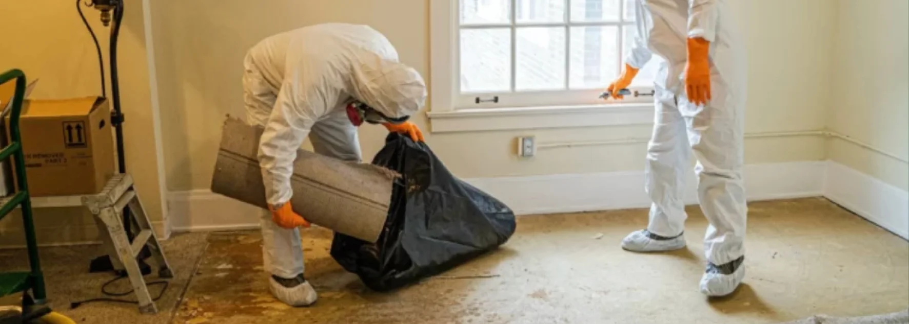

- Aucune urgence absolue : prenez le temps qu'il vous faut, sauf délai imposé par la régie
- 3 étapes principales : tri des affaires, débarras, nettoyage final
- Confier à un professionnel : libère les proches du poids logistique pendant le deuil
- Discrétion garantie : équipes formées au respect et à la confidentialité
- Coordination possible : débarras et nettoyage avec un seul interlocuteur
Un sujet qu'il faut aborder avec respect
Perdre un proche est l'une des épreuves les plus difficiles de l'existence. À la douleur du deuil s'ajoute souvent une charge logistique inattendue : il faut vider un logement, gérer des objets chargés de souvenirs, respecter les délais d'une régie ou d'un notaire, et tout cela en plein bouleversement émotionnel.
Cet article n'est pas un guide marketing. C'est une aide pratique pour comprendre les étapes, savoir quand demander du soutien et alléger un moment qui ne devrait pas être encore plus difficile qu'il ne l'est déjà.
On s'occupe du concret, vous vous occupez de l'essentiel
Tri, débarras et nettoyage coordonnés · En toute discrétion, sans jugement
Voir le service insalubre & extrême →Quand commencer le nettoyage après un décès
Il n'y a pas d'urgence absolue dans la majorité des cas. Le rythme dépend de votre situation et de plusieurs facteurs.
Les situations qui peuvent imposer un délai
- Logement en location : la régie peut demander la remise des clés dans les délais légaux (généralement 1 à 3 mois)
- Vente immobilière déjà engagée par le défunt ou les héritiers
- Succession complexe nécessitant un état des lieux rapide
- Demande du notaire ou d'un exécuteur testamentaire
- Logement insalubre ou présentant un risque sanitaire
Quand vous pouvez prendre votre temps
- Logement en pleine propriété sans pression de vente
- Famille proche disponible pour gérer progressivement
- Pas de demande administrative urgente
Les étapes principales d'un nettoyage après décès
Le processus se déroule généralement en 3 phases, à votre rythme.
Étape 1 : le tri des affaires personnelles
C'est l'étape la plus émotionnelle. Elle consiste à séparer :
- Ce qui se garde : souvenirs personnels, objets de famille, documents importants
- Ce qui se redistribue : aux autres proches, à la famille élargie
- Ce qui se donne : associations caritatives, recycleries
- Ce qui se jette : objets en mauvais état, déchets
Étape 2 : le débarras du logement
Une fois le tri terminé, il faut évacuer le reste : meubles, électroménager, vêtements non gardés, encombrants. Cette étape implique :
- Transport vers les filières adaptées (recyclage, dons, déchetterie)
- Démontage des meubles si nécessaire
- Évacuation respectueuse, sans gâchis inutile
Un professionnel du débarras connaît les circuits de revalorisation : tout ce qui peut être donné l'est, ce qui peut être recyclé l'est, et la déchetterie reste le dernier recours.
Étape 3 : le nettoyage final du logement
Une fois le logement vidé, le nettoyage complet permet de :
- Rendre le logement à la régie dans un état acceptable
- Préparer le logement pour une vente ou une location
- Assainir les lieux après une période d'inoccupation
Le niveau de nettoyage dépend de l'état du logement. Dans certains cas, un nettoyage de fin de bail standard suffit. Dans d'autres, notamment après une longue maladie ou si la personne vivait seule depuis longtemps, un nettoyage en profondeur est nécessaire.

Quand se faire aider par un professionnel
Confier cette étape à quelqu'un d'extérieur n'est pas un manque de respect envers le défunt. C'est souvent au contraire le choix qui permet à la famille de mieux vivre le deuil, en ne s'épuisant pas dans une tâche physique et émotionnelle trop lourde. Voici les situations où ce choix apporte un vrai soulagement.
| Situation | Pourquoi un pro est recommandé |
|---|---|
| Famille éloignée géographiquement | Coordination à distance, photos avant/après |
| Délai serré imposé par la régie | Intervention rapide et efficace |
| Logement très encombré | Tri massif, débarras lourd |
| Conditions sanitaires dégradées | Désinfection professionnelle nécessaire |
| Charge émotionnelle trop lourde | Décharger les proches du concret |
| Pas de force physique disponible | Démontage et port de charges |
Faire appel à un professionnel n'est ni un signe de désengagement ni un manque de respect. C'est au contraire un choix lucide pour préserver les proches d'une épreuve qui s'ajouterait au deuil.
Comment se passe une intervention professionnelle
Pour les familles qui n'ont jamais sollicité ce type de service, voici le déroulement typique.
| Étape | Détail |
|---|---|
| 1. Premier contact | Téléphone ou email — écoute et explication de la situation |
| 2. Visite ou photos | Évaluation respectueuse du logement et du volume |
| 3. Devis personnalisé | Prix fixe écrit, prestations détaillées |
| 4. Coordination avec la famille | Tri des objets à conserver, validation des points sensibles |
| 5. Intervention | Avec discrétion, sans marquage extérieur si demandé |
| 6. Remise du logement | Vide, propre, prêt à être rendu ou vendu |
Les démarches administratives à ne pas oublier
Au-delà du nettoyage physique, plusieurs démarches accompagnent un décès en Suisse.
Démarches immédiates (dans les jours suivant le décès)
- Déclaration de décès à la commune
- Contact avec les pompes funèbres
- Information de la banque, de la caisse de pension, des assurances
- Suspension des prélèvements automatiques sur le compte du défunt
Démarches pour le logement
- Résiliation du bail (avec justificatif de décès, conditions spécifiques en Suisse)
- État des lieux de sortie avec la régie
- Résiliation des contrats : électricité, gaz, internet, téléphone
- Réexpédition du courrier auprès de La Poste
Démarches successorales
- Contact avec un notaire (obligatoire si succession complexe)
- Inventaire des biens
- Acceptation ou renonciation à la succession (délai légal)
Le soutien émotionnel reste essentiel
Vider le logement d'un proche n'est jamais qu'une tâche logistique. C'est aussi un moment de mémoire, parfois douloureux, parfois apaisant.
Quelques pistes pour traverser cette étape :
- Ne pas rester seul : faire venir un proche, un ami, même juste pour la présence
- Prendre des pauses : ne pas tout faire en un jour
- Garder une trace : photos des pièces avant le débarras, objets symboliques mis de côté
- Accepter l'aide : famille, amis, professionnels — ce n'est pas un échec de déléguer
- Solliciter un soutien psychologique si nécessaire (médecin traitant, services sociaux)
Coordination débarras et nettoyage : une solution clé en main
Dans les situations difficiles, avoir un seul interlocuteur pour le débarras et le nettoyage simplifie radicalement les choses.
FAQ – Nettoyage après décès
Combien de temps a-t-on pour vider le logement d'une personne décédée en Suisse ?
Cela dépend du contexte. Pour un logement en location, la régie peut demander la remise des clés selon les délais légaux du bail (1 à 3 mois généralement). Pour un logement en pleine propriété, il n'y a pas de délai imposé : vous pouvez prendre le temps nécessaire. En cas de succession complexe, le notaire peut donner des indications spécifiques.
Comment sont gérés les frais de nettoyage et de débarras après un décès ?
C'est une question pratique qui se pose souvent, et c'est légitime. Les frais sont généralement à la charge de la succession, donc déduits du patrimoine du défunt si la succession est acceptée. En cas de renonciation à la succession, la situation est plus complexe et un notaire peut vous guider sur les démarches à suivre. Le but n'est pas de transformer cette étape en charge financière supplémentaire, mais de trouver la solution la plus juste pour chacun.
Faut-il être présent pendant le nettoyage et le débarras ?
Pas nécessairement. Beaucoup de familles confient les clés au prestataire et reçoivent ensuite des photos avant/après. Cela permet à l'équipe de travailler sereinement et évite aux proches une présence émotionnellement difficile. Une présence en début d'intervention pour signaler les objets à conserver est cependant recommandée.
Que devient ce qui est débarrassé après un décès ?
Une entreprise sérieuse trie systématiquement. Ce qui peut être réutilisé est donné à des associations caritatives ou des recycleries. Les objets de valeur sont signalés à la famille avant toute décision. Seul ce qui ne peut être ni donné ni recyclé est éliminé en déchetterie. Cette approche limite le gâchis et respecte l'histoire du défunt.
Comment trouver un service discret pour un nettoyage après décès ?
Trois critères : 1) Une équipe formée à la confidentialité, 2) Des véhicules sans marquage visible si demandé, 3) Un interlocuteur unique pour éviter les intervenants multiples. Demandez explicitement ces points lors du premier contact. Une entreprise locale et familiale offre souvent une approche plus humaine qu'un grand groupe.
En résumé
Le nettoyage après décès est une étape qui combine logistique et émotion. Trois principes guident une démarche apaisée : prendre son temps quand c'est possible, ne pas hésiter à déléguer le concret à des professionnels, et préserver les proches d'une charge supplémentaire pendant le deuil. La coordination entre tri, débarras et nettoyage final avec un seul interlocuteur simplifie radicalement le processus. L'objectif est de permettre à la famille de se concentrer sur l'essentiel : le souvenir et le deuil.
- 143 — La Main Tendue : écoute anonyme 24h/24
- CMS (Centre médico-social) : aide à domicile et accompagnement
- Pro Senectute : soutien aux personnes âgées et à leur famille
- Votre notaire : démarches successorales
- Votre médecin traitant : soutien en cas de deuil difficile